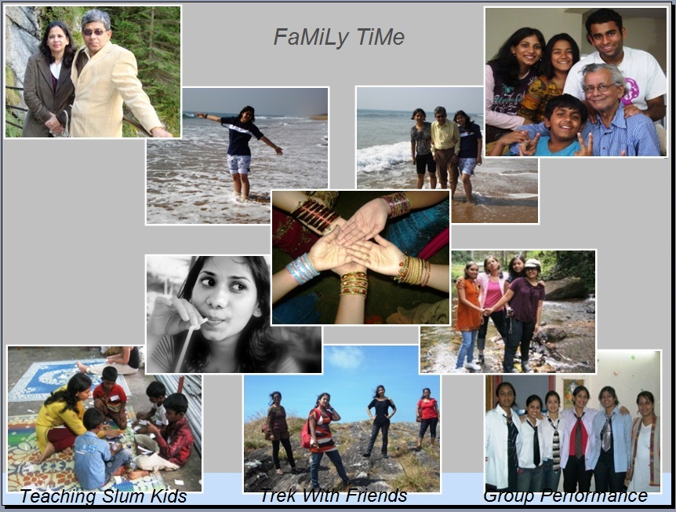

Life is Challenging and Interesting in every sphere. If we sit back and Delve Deep Into Our Inner Mind , for a moment, many Faces, Places and Incidents flash by... Here I have tried to share with you a Blend of my experiences. At Work or Play...there is some thing new we learn in Every Day !! Hope u like the reading experience... Do reach out to me with Your UnBiAsEd View !!
Welcome To My "Den"
I am a Developer and have been coding for a little over 2.5 years now.
I work for one of the finest firm in providing IT Solutions Globally- "Tata Consultancy Services"
My key technology is Ruby and as can decipher from my Tech Blogs, I have been running my fingers over various aspects of web app development recently . The whole Idea of learning new stuff that spans across the life span of an app i.e. Right from the User Interface to the Database tables and servers, is the call for the day or rather is what is frequently referred to as "The Full Stack Developer".
It feels Great to realize the efficiency and Independence a coder feels, when you can design, code and deploy on your own !!!
On a more lighter note I am person who believes in "Fun At Work", as the ultimate Mantra for Success.
I take part in several CSR (Corporate Social Responsibilities) programs, which ranges from teaching slum kids to organizing trips and camps.
I am a Guide and have been awarded with "Governor Award" , for my performance as a Guide.
The whole Idea of helping people, arranging camps, long treks fills in a gush of fresh spirit and air in me.
In my free hour, I love writing on abstract stuff. Dreamer, that I am , I enjoy write about things and moments around me which touched my heart or left behind trail of remembrance. I have written down some of my Dreamy lines for you. Hope it brings a smile in your lips as it does to mine. For me reading my stuff is like a trip "Down The Memory Lane".
Hope you enjoy the reading experience and the pictures, which reflect the colors of my life.
This is the tech view: TECHNICAL BLOGS WILL GET POSTED HERE
These r my passions: SOME STUFF WILL BE POSTED



 Facebook
Facebook Twitter
Twitter